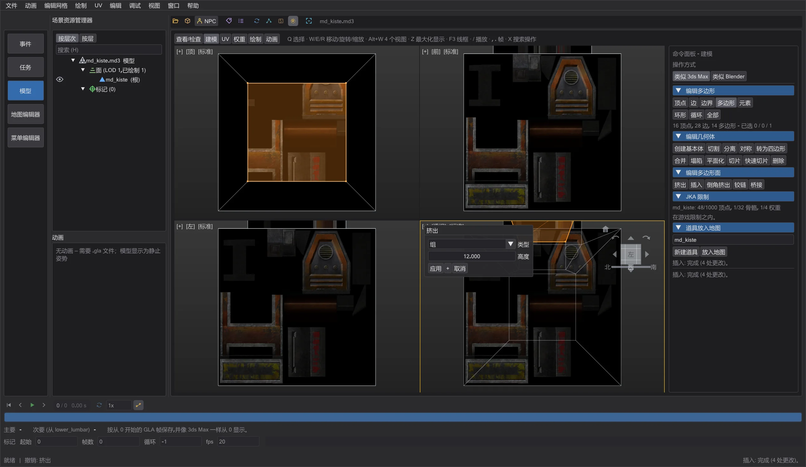
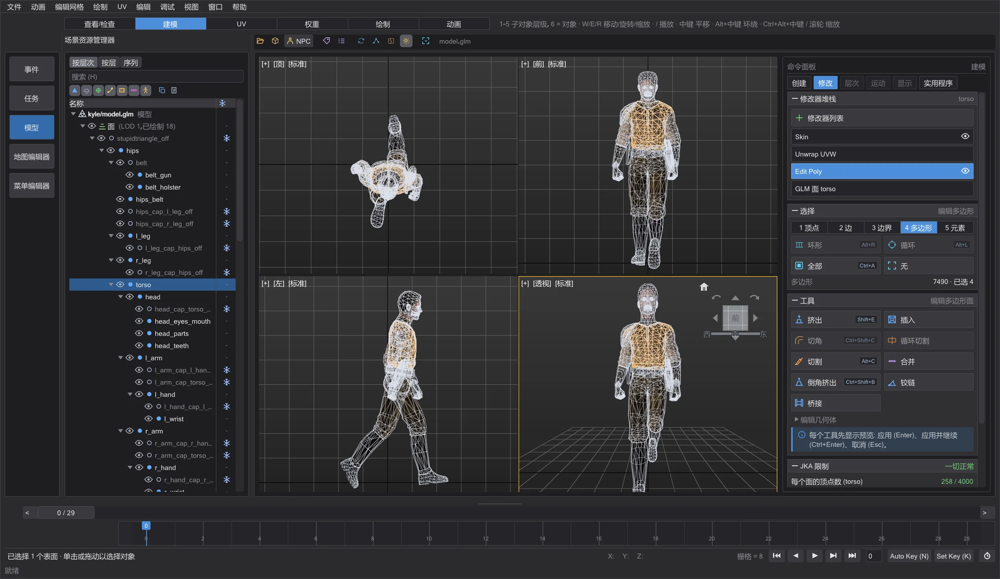
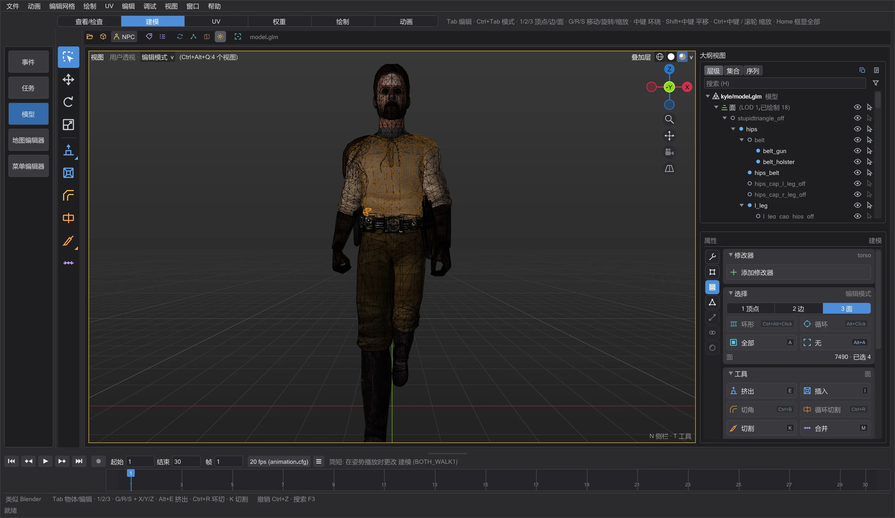
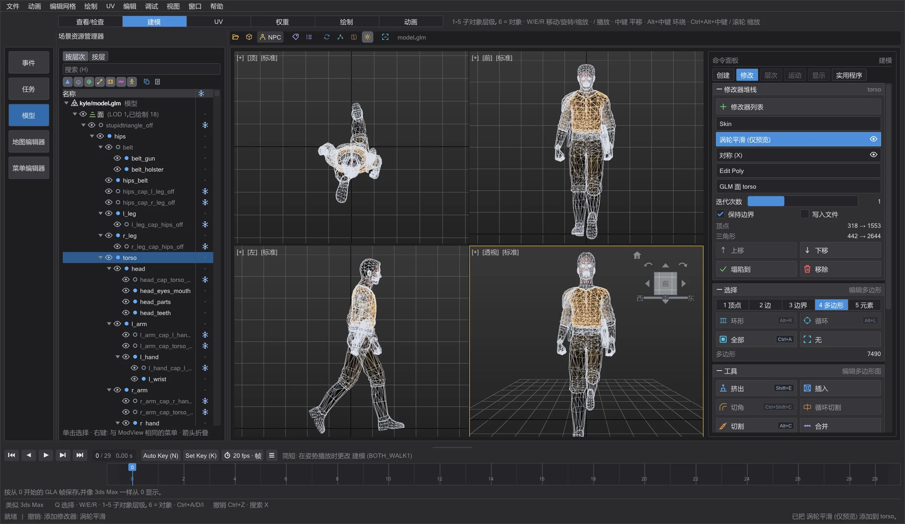
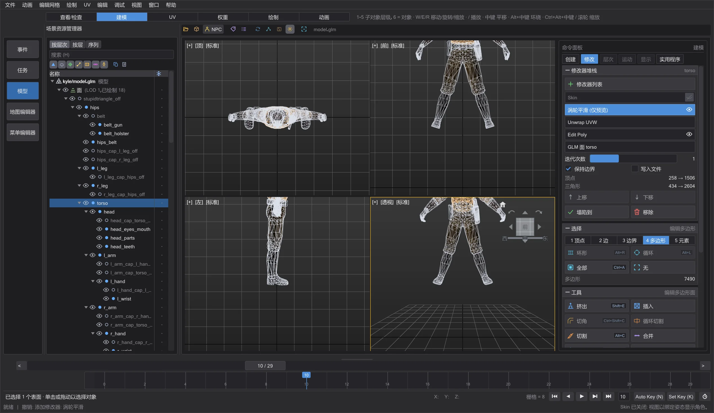
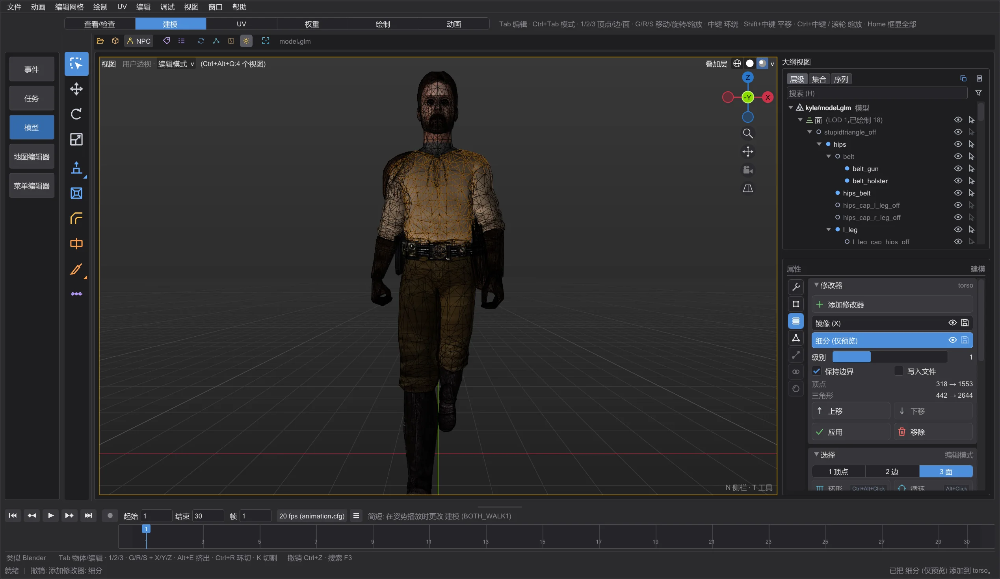
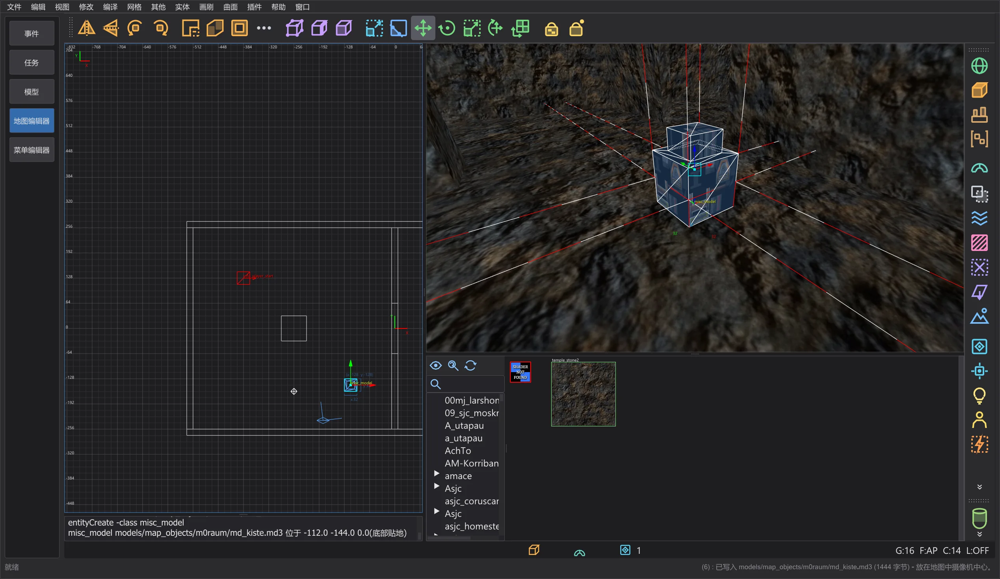

模型选项卡: 建模与地图道具
像 3ds Max 的可编辑多边形或 Blender 的编辑模式一样, 用多边形工具构建和修改 .glm 或 .md3 的面 - 并一键把椅子或箱子等道具放入打开的地图。
建模区域#
在模型选项卡顶部选择 建模 区域。按键 1 到 5 (Blender 模式 1 到 3) 选择层级: 顶点、边、边界、多边形 和 元素; 与 3ds Max 一样, 每个层级保留自己的选择。单击选择, Ctrl 添加, Alt 移除 (Blender: Shift 添加或移除), 拖框选择所有经过的元素。视图在模型上绘制多边形 - 文件中平铺相邻的两个三角形就是一个四边形, 转为四边形 会合并它们。W/E/R (Blender G/R/S) 移动、旋转和缩放选择。右侧的 工具 组列出该层级的工具; 同样的工具在菜单 编辑网格、视图右键菜单和搜索 (X, Blender 模式为 F3) 中, 每个提示都写有按键 (3ds Max 模式: Autodesk 表中的默认按键, 例如 Shift+E 挤出、Ctrl+Shift+B 倒角、Ctrl+Shift+C 切角、Alt+L/Alt+R 循环/环形), 没有按键的工具则写出菜单中的路径。没有模型时, 新建道具 会以地图编辑器当前选择的纹理新建一个空 .md3。

右侧面板 按已批准的设计构建: 三个组上下排列。选择 把各层级放在一行格子中, 前面是按键 (3ds Max 模式 1 到 5, Blender 模式 1 顶点、2 边、3 面), 下面是 环形、循环、全部、无 以及网格的计数和已选数量。工具 把六个主要工具显示为等宽按钮, 带符号和当前操作模式的按键 - 挤出、插入、切角、循环切割、切割、合并 - 其后是该层级的其他工具, 标题沿用 3ds Max 的名称 (编辑顶点、编辑边、编辑边界、编辑多边形面), 以及折叠的 编辑几何体。在当前层级不起作用的工具显示为灰色, 其提示写明它适用的层级。JKA 限制 为所选面显示进度条 - 顶点、骨骼和权重对照游戏的限制, 90 % 起为黄色, 超出为红色 - 并在标题中写明最接近限制的一项; 模型中的面 统计面数, 单击即可展开全部面的列表。

面板的 其他选项卡 放置与修改网格无关的内容。基本体和道具位于模型产生的地方: 3ds Max 模式在 创建 选项卡, Blender 模式在 物体 选项卡 - 基本体 组每种形状一个按钮, 道具放入地图 组包含名称、新建道具 和 放入地图。只要打开的是道具, 道具放入地图 也保留在本区域的选项卡中, 使 放入地图 仍然只需单击一次; 空道具会在那里最上方显示 基本体。JKA 限制 也在 实用程序 下 (Blender 模式: 数据), Blender 模式的 工具 选项卡只显示选择和工具。

工具与工具框#
带数值的工具会在视图左上角打开一个小工具框: 结果立即显示, 拖动数值时实时变化; 应用 (Enter) 保留, + 保留并在结果上再次运行同一工具, 取消 (Esc) 恢复原状。每个工具是一个撤销步骤。挤出 抬起多边形 (组、局部法线或按多边形) 或从边界长出一条带; 插入 在内部放入较小副本, 每条边同样距离; 倒角挤出 挤出并缩放轮廓; 切角 用带替换边或切掉顶点; 连接 和 循环切割 在多边形中加入边; 切割 依次点击边和顶点进行切割; 焊接、目标焊接 和 合并 合并顶点; 平面化 (Alt+M) 把选择移到同一平面 (平均法线, 经过其中心); 塌陷 (Ctrl+Alt+C) 把每个相连的组变为一个顶点; 切片 沿垂直于某轴的平面切开, 快速切片 (Ctrl+Shift+Q) 沿视图中两次点击的线切开; 铰链 让多边形绕其一条边界边旋转; 桥接 用四边形带连接两个边界或两个多边形; 移除 溶解边和顶点, 删除 留下孔洞; 分离 分离多边形或放入有独立纹理的新表面; 对称 镜像一半; 创建基本体 添加带 UV 的盒子、平面、圆柱、球、圆锥、管或圆环。无法执行的工具会说明原因 (例如: 某条边会出现第三个多边形), 且不做任何更改。新顶点采用其多边形的 UV, 并混合相邻顶点的骨骼权重 (最多四个, 总和为 1)。
在 Blender 模式下还适用 Blender 编辑模式的按键: Alt+单击选择鼠标下的边循环, Ctrl+Alt+单击选择边环 (在多边形上 Alt+单击选择面循环), Ctrl+L 把选择扩展到所有相连部分 (选择相连), J 连接两个顶点, Ctrl+X 融并边 (移除)。切角 的工具框中有 分段 和 张力 (Blender: 形状): 0.5 把边倒成圆弧, 0.25 直切; 每个分段是一排四边形, 其他数值让顶点在曲线上等距分布。三条或更多倒角边相交处, 角落像 Blender 的倒角一样用四边形网格填充 (分段数为奇数时中间是一个小多边形)。轮廓为 1 时角保持方角 (原来的顶点保留), 单条倒角边在有四条边的顶点处的末端变成三角形扇, 角落网格、条带和角多边形的纹理坐标取自它们所替换的面 (分段数为奇数时中间一排遵循 UV 接缝), 都与 Blender 相同。两条倒角边之间未选中的边共用一个角点。
修改器堆栈#
修改器 在不触碰网格的情况下改变一个面: 其下的面保留已建模的内容, 视图显示结果。每个面都有自己的堆栈; 面板显示在树中或视图中所选面的堆栈。3ds Max 模式下, 修改器堆栈 组位于 修改 选项卡的最上方 (建模区域和 Weights 区域), 自下而上读: 文件中的面、Edit Poly、各修改器、Skin。单击 Edit Poly 或 Skin 可在建模与 Weights 之间切换。Blender 模式下, 修改器 组位于 修改器 选项卡, 只列出修改器, 自上而下。选择、工具和操纵器仍然作用于其下的网格。

修改器列表 (Blender 模式: 添加修改器) 可添加两种修改器之一。对称 (Blender 模式: 镜像) 在穿过模型原点的轴平面处切开面, 并把一侧镜像到另一侧: 只需建模一半, 另一半随之变化, 骨骼权重也转到另一侧的骨骼。涡轮平滑 (Blender 模式: 细分) 细分并圆滑面, 一到三次; 保持边界 使开放边界保持原位, 面仍与相邻面相接。列表下方是所选修改器的设置以及它之前和之后的顶点数与三角形数 - 一旦结果超过游戏对每个面的限制, 就显示为黄色或红色。
眼睛图标用于开关修改器。写入文件 决定保存和导出时是否把它的结果写入文件: 平滑起初 仅预览, 因为仅一步就把一个三角形变成六个, 角色很快就会超过游戏的限制。上移 和 下移 (或拖动某一行) 改变顺序, 顺序即计算顺序。应用 (3ds Max 模式: 塌陷到, 它会处理到所选修改器为止所有已启用的修改器) 使结果在每个 LOD 中成为面的实际网格 - 正是视图此前显示的网格。移除 把修改器从堆栈中移除。以上每一项都是一步撤销。同样的命令也在行的右键菜单、视图的右键菜单和 搜索所有操作 (X) 中。
在 3ds Max 模式下, Edit Poly 和 Skin 也有眼睛图标。关闭 Edit Poly 时按加载时的样子显示该面, 不含此后的更改; 关闭 Skin 时以绑定姿态显示整个角色, 骨骼保持其姿态, 与 3ds Max 相同 (所有面都挂在同一骨架上)。两者都只改变显示: 没有撤销步骤, 模型和保存不变。在 Edit Poly 上方, 与 3ds Max 一样有 Unwrap UVW - 面的 UV; 单击可切换到 UV 区域。


JKA 限制与 LOD#
卷展栏 JKA 限制 按写入文件的方式统计每个表面: 少于 1000 个顶点 (SHADER_MAX_VERTEXES)、每表面最多 32 根骨骼、每顶点四个权重、名称和纹理最多 63 个字符 (MAX_QPATH), 每个标签正好一个三角形; 条形在达到上限的 90 % 时变黄, 超过后变红, 工具框在预览时就会显示。顶点过多: 用 分离 拆分表面。.glm 保留其他 LOD 层级; 将此 LOD 复制到全部 让所有层级使用当前绘制层级的网格。
一键把道具放入地图#
在 道具放入地图 中为道具命名并点击 放入地图: JK Studio 将其作为 .md3 写入自己的导入文件夹中的 models/map_objects/<地图>/<名称>.md3 (绝不写入游戏文件夹), 切换到地图选项卡, 并作为 misc_model 放在摄像机中心的地面上; 在那里像任何实体一样移动、旋转和缩放。导入文件夹位于编辑器和 q3map2 的搜索路径中, 测试或打包时会进入地图的 .pk3, 因此道具像每个 misc_model 一样带光照贴图烘焙进地图。要修改它, 点击实体 model 键旁的编辑按钮 (或再次从模型选项卡开始) - Ctrl+S 之后地图编辑器会重新加载所有副本, 它们保持位置、角度和缩放。

来源与许可#
建模工具源自 WhiteoutLib 和 WhiteoutFlakes (BSD 3-Clause 许可, 附 AI 衍生作品声明, Copyright (c) 2026 Fernando Sahmkow)。它们只处理 Jedi Academy 的数据: .glm 和 .md3 的面。许可文本见 licenses/、THIRD-PARTY.md 和 帮助 > 关于。多于一个分段的倒角移植自 Blender 的倒角 (bmesh_bevel.cc, GPL-2.0-or-later, Copyright Blender Authors); 这些部分与 JK Studio 一样按 GPL v2 使用。